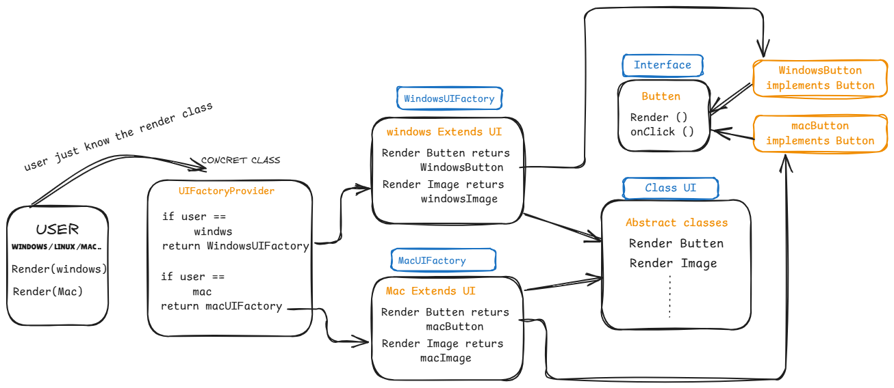

Lets us have a small real time uncase to understand Factory Method Design Pattern
Let say we have two Different OS Mac and windows they decided to show the UI on the screen to the users. Obviously Windows has its own way of presenting Images and Battens and mac has its own way. To have a synchronization, Implementation needs to be same. Such that if a person have to see a webpage they need not to interact in different ways in different operating systems right. To maintain this we are now going to look at how Factory method design pattern solves this problem.

Lets us consider main.go has a Client, FMDP concept is very simple it just exposes the concert class which return the actual class according to the user requirements. This ConcretClass in our case is responsible for checking what particular OS the Client is using and based on that it return us a factory.
Abstract Factory lets client understand what all Functions we can perform using the Factory Class returned by the Concrete Class. It contain the set of predefined abstract functions, that must be performed by the Factory Class. In our case our theme is all about rendering ui and functions are RenderImage and RenderBatten there can be more but for simplicity i have defined this two. tomorrow a new factory comes like ubuntu or any other they must look at the abstract Factory interface and implement those functions. Here the work of developers became simple ans also the Clients.
Factory Classes is the place where all the functions that are defined in the Abstract Factory are implemented. In our case we have two factory's Windows and Mac. In GoLang we can use struct as a class. So now we have WindowsFactory struct and MacFactory struct. Both of this have RenderImage and RenderBatten functions.
As we just discussed weather it is windows or mac a batten must click and image must view. So Product interfaces defines that structure. For simplicity we just made the output as string but in real scenarios there can be something like onClick, hover, color, height, width etc.. and images interface is different from batten interface. product interface gives a set of functions that needs to be implemented by products(Battens, Images etc..)
If you look at the Return types of the abstract functions defined in the Factory Class, this are factory products interfaces which is actually implemented by product classes. Everything Function that is defined under Product Interface must be implemented by Factory Products. In case of Windows we have WindowsImage and WindowsBatten returns product interfaces like Images and Battens.
func main() {
WindowsUI := UIrendering("windows")
MacUI := UIrendering("Mac")
fmt.Println(WindowsUI.RenderImage().Render())
fmt.Println(WindowsUI.RenderBatten().Render())
fmt.Println(MacUI.RenderImage().Render())
fmt.Println(MacUI.RenderBatten().Render())
}
The flow is like UIrendering is a concrete class that returns a Factory interface (return Type ui), this UI has set of Functions like RenderImage and RenderBatten. Render gives factory specific implication.